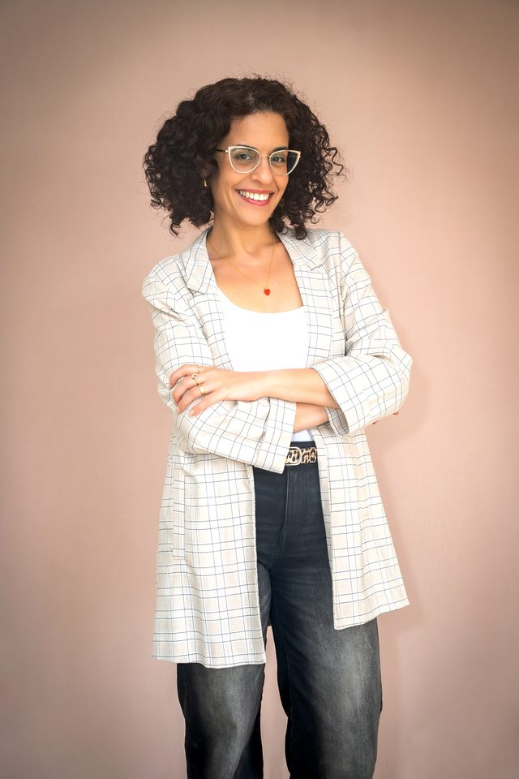
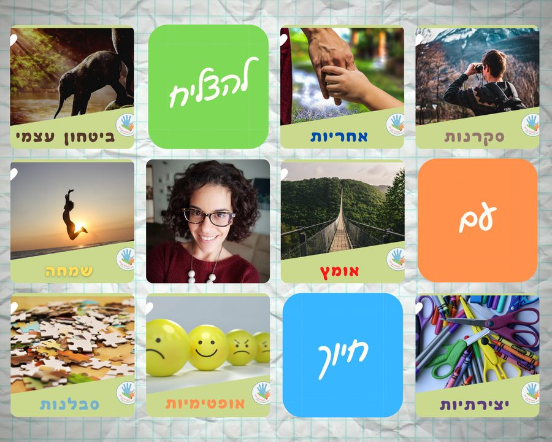

נעים להכיר!
שמי סיון, נשואה לדורון ואמא של תמר ואורן.
מנהלת 'להצליח עם חיוך'
אבחון דידקטי, פיתוח כישורי למידה וליווי מקצועי למורות להוראה מתקנת בתחילת דרכן.
בהתמחותי BA בחינוך ולשון עברית מטעם אוניברסיטת בן גוריון, תעודת הוראה בלשון ו-MA באבחון וטיפול בלקויות למידה מטעם האוניברסיטה העברית.
מגיל קטן ידעתי שאני רוצה לעסוק בתחום החינוך. משנת 2009 יש לי הזכות לקחת חלק מתהליכי למידה של תלמידים רבים במגוון גילאים, ללוות אותם בהתמודדות עם הקושי אל מול האתגרים העומדים בפניהם ולחוות איתם את תחושת הסיפוק נוכח הצלחות קטנות וגדולות לאורך הדרך.


מודה על הזכות
להיות דמות משמעותית בחיי מורות רבות, ילדים וילדות, ולהשפיע עליהם,
על הביטחון העצמי ועל תחושת המסוגלות שלהם, מעבר ללימודים עצמם.